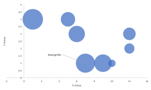
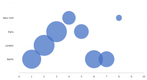
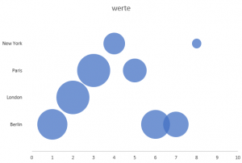

Ein Blasendiagramm / Bubble Chart mit Nominal-Skala in Excel
OK. Erstmal zu den Grundlagen, damit du überhaupt weißt, warum du hier bist: Eine Blasendiagramm oder Bubble Chart erlaubt dir, Informationen mit drei Dimensionen in einem Diagramm darzustellen. Zwei Dimensionen bestimmen die Position im Diagramm anhand der X- und Y-Achse, die dritte Dimension legt fest, wie groß die Blase - neudeutsch Bubble - ist.
[caption id=“attachment_2370” align=“aligncenter” width=“300”] 
{kind=link}
Das Problem ist aber, dass dieses Blasendiagramm metrische oder mindestens ordinale Daten erfordert. Also Daten, die in eine natürliche Reihenfolge gebracht werden können. Was aber, wenn du Eigenschaften nominaler Daten visualisieren willst. Also z.B. die Einwohnerzahl und Fläche von Städten?
Der Stadtname soll dabei an der Y-Achse stehen, die Einwohnerzahl die Größe der Blasen definieren und die Position an der X-Achse über Fläche festgelegt werden. Die letzten beiden Dimensionen sind dabei metrisch - sie haben eine natürliche Reihenfolge und skalierbare Abstände. Aber die erste Dimension, die Städte-Namen, sind nominal. Du kannst sie nicht sortieren (die alphabetische Sortierung mal außen vor) und es gibt keine skalierbaren Abstände. Excel kann daraus also kein Bubble-Chart wie z.B: dieses machen:
[caption id=“attachment_2371” align=“aligncenter” width=“300”] 
{kind=link}
Du ahnst es bereits: Das Diagramm stammt natürlich von Excel. Es ist nämlich, über ein paar Umwege, auch in Excel möglich, diese schönen Blasendiagramme zu erzeugen. Und wie, dass zeige ich dir jetzt.
Schritt 1: Die nominalen Daten mit einem Index versehen
Zunächst einmal zu den Rohdaten: Vor dir liegt eine Tabelle mit den Werten für die X- und Y-Achse sowie die Größe der Blasen. Wenn du daraus ein Blasendiagramm erzeugst, ignoriert Excel deine Städtenamen erst einmal ganz. Änderst du nun die Datenquelle der Y-Achse, kann Excel damit nichts anfange und du erhälst dieses nichtssagende Diagramm:
[gallery columns=“2” link=“file” ids=“2376,2375”]
Der erste Schritt ist ziemlich naheliegend: Du verpasst du den nominalen Daten einen Index, damit sind sie nämlich metrisch und können im Bubble Chart verwendet werden. Jede Stadt wird also einer Position auf der Y-Achse zugeordnet. Danach musst du die Datenreihe natürlich bearbeiten und die “Werte der Reihe Y” der neuen Spalte zuordnen. Für die folgenden Schritte musst du nur darauf achten, dass die Spalte der Y-Achse einmal alle Inde
[gallery columns=“2” link=“file” ids=“2373,2374”]
Dummy-Spalten einfügen
Das Ergebnis kann sich schon fast sehen lassen. Fast. Denn die Herausforderung ist nun, die Städtenamen an die Y-Achse zu bekomen. Bisher (Excel 16) gibt es dafür keine Möglichkeit. Das umgehst du mit zwei Dummy-Spalten. Die erste Dummy-Spalte sorgt dafür, dass die Städtenamen ihrer Position auf der Y-Achse finden, die zweite Dummy-Spalte gibt den Blasen eine Größe. Du fügst nun eine neue Datenreihe hinzu die auf diese Werte verweist. Das Ergebnis sind ein paar neue Bubbles auf deiner Y-Achse:
[gallery columns=“2” link=“file” ids=“2378,2377”]
Y-Achse mit Städtenamen schmücken
Du hast es fast geschaft. Als nächstes blenden wir die Dummy-Blasen aus und sorgen dafür, dass an deren Stelle Städte-Namen stehen. Zuerst fügst du die Datenbschriftung hinzu: Rechter Mausklick auf eine der Dummy-Blasen und dann den Punkt “Datenbschriftungen hinzufügen” anklicken. Nun formatierst du die Datenbeschriftungen. Also wieder mit der rechten Maustaste auf eine Dummy-Blase klicken und den Punkt “Datenbeschriftung formatieren” auswählen. Daraufhin geht ein Fenster auf, in dem du unter “Beschriftungs-Optionen” die erste Checkbox aktivierst: “Wert aus Zahlen”. Daraufhin öffnet sich eine kleine Dialog-Box. Du wählst nun einmal alle Städtenamen aus. Der Auswahlbereich darf aber nur so groß sein, dass jede Stadt genau einmal erfasst wird. Danach deaktivierst du die anderen Checkboxen darunter. Du bist auf der Ziellinie, mach das Fenster mit den Datenbeschriftungen aber noch nicht zu, das brauchen wir noch!
[caption id=“attachment_2379” align=“aligncenter” width=“300”] Dummy-Bubbles mit Datenbschriftung versehen[/caption]
{kind=link}
Das Diagramm fertigstellen
Abschließend musst du nur noch ein wenig an der Formatierung schrauben: Dazu solltest du erstmal die Beschriftungsposition auf “Links” ändern. Dann wählst du die Dummy-Blasen aus und änderst Füllfarbe und Kontur auf “nix”. Jetzt kannst du noch die Y-Achse entfernen (anklicken und “ENTF” drücken) oder, wenn du die vertikale Linie behalten möchtest, die Schriftfarbe auf weiß setzen. Zack-Fertig: Blasendiagramm mit nominaler Skala:
[caption id=“attachment_2380” align=“aligncenter” width=“300”] 
{kind=link}